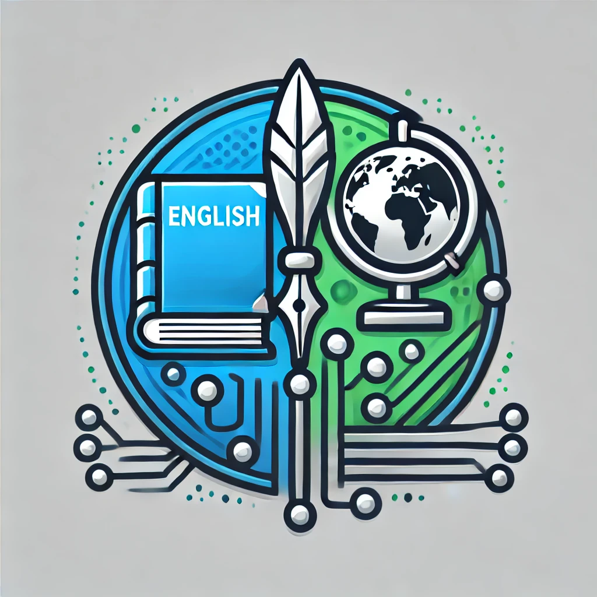

Inicio

INGLES:Esta representado por un libro con una pluma,simbolizando el aprendizaje del idioma,literatura y la escritura creativa. Este refleja como el lenguaje los conecta y facilita la comunicacion efectiva.
SOCIALES:Esta simbolizado por un globo terrequeo en el centro,se representa el estudio de las culturas,la historia y la geografia global.El globo refleja la comprension de nuestra social y en el mundo que vivimos.
TECNOLOGIA:Esta representado por un patron de circuitos destacando la importancia de las habilidades tecnicas y digitales del mundo moderno.Representa la invocacion,el avance y la conectividad tecnologia.
Este logo simboliza como estas 3 disiplinas se interrelacionan para construir una educacion integral y moderna.